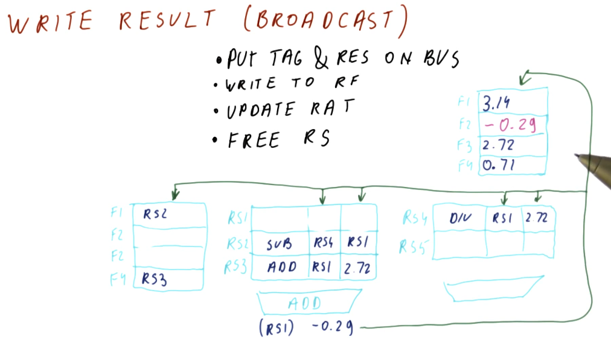
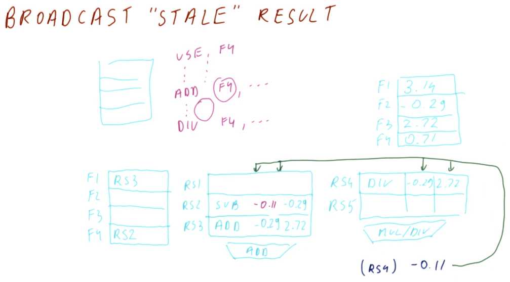

Writing (Broadcast)
Below is an excerpt from the lectures that shows us what happens when a result is written or broadcasted to the reservation stations and the register file. Some steps take place:
- The result is tagged with the reservation station that is generating this result. This combo is then emitted onto the bus.
- The result is written to the register file. We are able to determine what register is being written based upon the RAT - it will contain the name of the reservation station for the appropriate register.
- The RAT is then updated, clearing the reservation station name from the table and marking the location for a register as clear.
- The spot the instruction held in the reservation station is freed.

More than 1 broadcast?
There are multiple possibilities that we can consider when handling multiple broadcasts. The first idea is to make more than one bus available - a bus for each dispatch unit in the processor. While that sounds like a good idea, the number of structural dependencies to implement this doubles for each bus - that's a lot of resources and more logic is needed in order to correctly direct the different values being generated.
Another option is to give priority to one dispatch unit over the other, and this is the more likely case. In the example below, we give more priority to the slower dispatch unit. Why? Because if one dispatch unit is slower, it's more likely that faster dispatch units are waiting on values to be broadcasted by the slower one.

Stale broadcasts
Can we have stale broadcasts? Is that really a thing? Not necessarily. In the
example below we see that a broadcast is occurring for RS4, but there's no
entry for that reservation station in the RAT. So where will this result be
written to - what's its destination?
We can see that RS2 is generating a value and it has overwritten F4, which
was the original destination of RS4's value - this is perfectly fine and works
as intended. RS2 was the only instruction that depended on the output of
RS4, it will have the value it needs to update F4. All subsequent
instructions reading F4 will utilize the value generated by RS2 - the
"stale" value being broadcasted by RS4 won't cause any issues.
